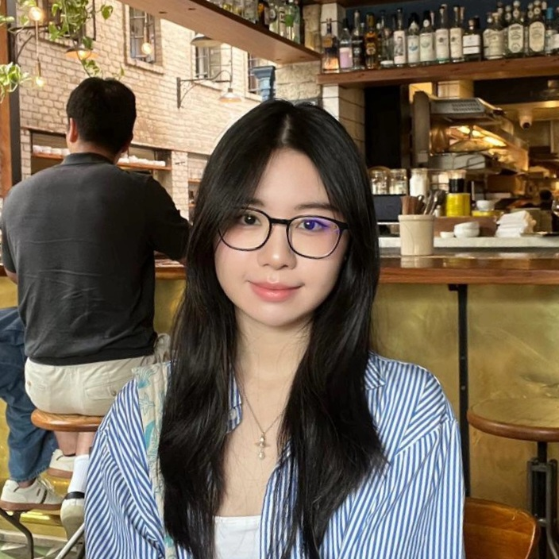

{{ p.kind }}
{{ p.date }}
{{ p.ex }}
A senior at the University of British Columbia.
I’m interested in the nature of intelligence, particularly personal agents, embodied AI, and how intelligent systems can interact with the physical world.

{{ c.q }}
{{ c.finding }}
{{ tsel.note }}
{{ p.ex }}
{{ post.lead }}
{{ pp }}
The Worlds I See
Fei-Fei Li
A directory I built of the city’s museums and art galleries.
Essay, September 2022